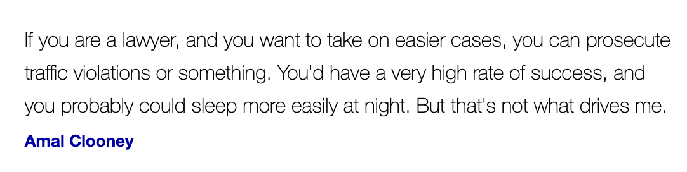

About Me
Homepage
About Me
Visual Designs
Digital Design
Web Client Program
Overview
International Baccalaureate Career-Related Programme student
On track of being CTE Certified in Web Design
Subject(s) I enjoy learning: Humanities-oriented subjects for its insight into the complexities of human nature and opens the floor to interpretation rather than a definitive answer.
Intended Major(s): International Relations & Economics
Interests: Law, Journalism, Coding, Artificial Intelligence, Business
Short-term academic + career plans:
Focus on extracurricular activities such as research and internships.
Study abroad in a culturally rich country for a semester.
Take a gap semester or gap year after 2nd year of college to reevaluate my choices and attain meaningful work and life experiences.
A quote that motivates me
